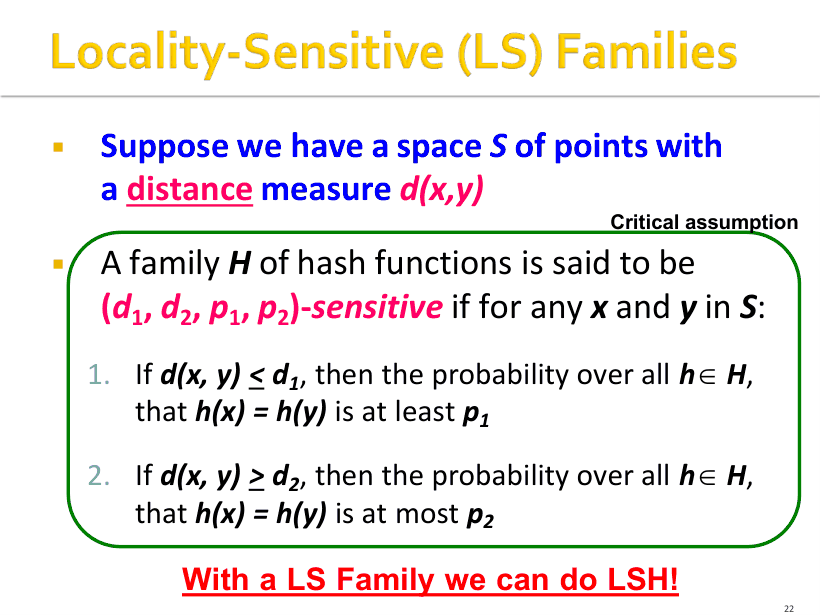
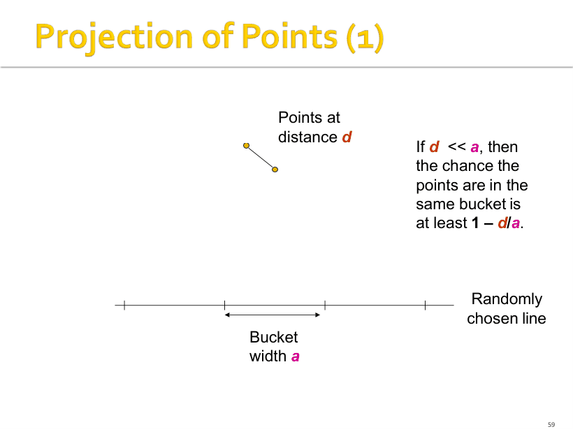

P1
封面与本讲路线
这是 L4 的封面，主题是相似性搜索 II（Similarity Search II），幻灯片主要来自斯坦福 Jure Leskovec。它接在 L3 的三步流水线后面：L3 只把 Jaccard 加 Min-Hash 这一种情况讲透了，这一讲先把「距离度量」和「敏感族」抽象出来，再用 AND 与 OR 构造把任意敏感族放大成阶跃曲线，最后给出余弦距离（随机超平面）和欧氏距离（直线分桶）两套具体构造。带着这条主线看图：距离、敏感族、放大、分桶。
对应课件 p1–p65（抽取文本 PAGE 0–57）。本讲把 L3 的"Min-Hash + band"抽象成"任意距离度量都能做 LSH"：先记 4 条距离公理，再背 (d1,d2,p1,p2) 敏感族，最后会用 AND/OR 把族放大成阶跃曲线，并会算余弦（1−θ/π）与欧氏（a/2, 2a, ½, ⅓）两个具体族。
d(·) 是距离度量，当且仅当它把任意两点映射成实数并满足四条：(1) 非负 d(x,y) ≥ 0；(2) 同一性 d(x,y) = 0 当且仅当 x = y；(3) 对称 d(x,y) = d(y,x)；(4) 三角不等式 d(x,y) ≤ d(x,z) + d(z,y)。三角不等式是最容易违反、也最常被考的一条。
课件口径差异（要留意）：L3 p10 写的是较弱版本 d(x,x) = 0（只保证"自己到自己为 0"），L4 p14 写的是更强的"当且仅当"。按 L4 的强版本记：第 2 条同时禁止"两个不同的点距离为 0"（否则叫伪度量 pseudometric，不能直接用标准 LSH 分析）。
三步检查：先看 d(x,x) 是不是 0（余弦相似度在 x=x 时得 1，直接淘汰）；再看两个不同的点能否距离 0；最后试三角不等式，最常见反例就是"平方距离" d(x,y) = (x−y)²：在数轴上取 x = 0、y = 2、z = 1，d(0,2) = 4，而 d(0,1) + d(1,2) = 1 + 1 = 2，4 > 2，违反三角不等式。
数值例：x = (1,2,3)、y = (4,0,1) → L1 = 3 + 2 + 2 = 7；L2 = √(9 + 4 + 4) = √17 ≈ 4.12。这两个数考试常要求手算，注意 L1 是绝对值和、L2 是平方和再开方。
| 度量 | 公式 | 取值范围 | 是距离度量？ |
|---|---|---|---|
| Jaccard 距离 | 1 − |C1∩C2|/|C1∪C2| | [0,1] | 是（集合上的标准距离） |
| 余弦距离 | θ = arccos(cos θ) | [0,π]，除 π 后 [0,1] | 是（角度是度量） |
| 余弦相似度 | cos θ = A·B/(‖A‖‖B‖) | [−1,1] | 不是（d(x,x) = 1 ≠ 0） |
| L2 / L1 | √∑(xᵢ−yᵢ)² / ∑|xᵢ−yᵢ| | [0, ∞) | 都是 |
| 平方欧氏 | ∑(xᵢ−yᵢ)² | [0, ∞) | 不是（违反三角不等式） |
"hash function"在这里被广义化成：任何能替你判断两个元素是否"相等"的函数，h(x) = h(y) 只是"h 认为它们相等"的简写。"family of hash functions"指一个能从中高效随机抽取一个函数的集合，典型例子就是所有行置换生成的 Min-Hash 函数族。LSH 的全部设计都发生在"族"这一层。
近的点（距离 ≤ d1）被同哈希的概率至少 p1（高）；远的点（距离 ≥ d2）被同哈希的概率至多 p2（低）；中间地带 d1 < d < d2 定义不作要求。画成图时横轴是距离而不是相似度，所以曲线左高右低——课件 p17 原话是"注意这是距离不是相似度，因此 S 曲线是翻转的"。这是本讲最容易被写反的地方。
如果要把距离换成相似度画图，就得到 L3 那条左低右高的 S 曲线：相似度大 → 同桶概率大。两种画法等价的，但定义里的 p1 永远是配 d1。

设 S 为所有集合、d 为 Jaccard 距离、H 为所有行置换的 Min-Hash 函数族，则对任意 h ∈ H 有 Pr[h(x)=h(y)] = 1 − d(x,y)。于是 H 是 (d1, d2, 1−d1, 1−d2)-sensitive，对任意 d1 < d2 成立——因为 d1 < d2 ⇒ 1−d1 > 1−d2，正好满足 p1 > p2。
取 d1 = 1/3、d2 = 2/3，就得到课件 p25 那个必背的实例：Min-Hash 是 (1/3, 2/3, 2/3, 1/3)-sensitive。
这一节的意义：L3 只证明了"Jaccard + Min-Hash 能做 LSH"，L4 说明"任何距离只要找到敏感族就能照同样的套路做 LSH"。所以考题常问"LSH 为什么能推广到其它距离"——答：band 技术与具体度量无关，它只依赖 (d1,d2,p1,p2) 这个性质。
从族 H 取 r 个函数组成 h = [h1, …, hr]，规定 h(x) = h(y) 当且仅当每个 hi 都相等。定理：若 H 是 (d1,d2,p1,p2)-sensitive，则 H′ 是 (d1, d2, p1ʳ, p2ʳ)-sensitive（用各 hi 独立，概率连乘）。效果：所有概率都被缩小——对大距离（p2）是好事（更接近 0），对小距离（p1）是坏事（也被压小）。
从 H 取 b 个函数，规定 h(x) = h(y) 当且仅当至少一个 hi 相等。定理：H′ 是 (d1, d2, 1−(1−p1)ᵇ, 1−(1−p2)ᵇ)-sensitive。效果：所有概率都被放大——对小距离（p1）是好事（更接近 1），对大距离（p2）是坏事。
所以标准做法是串联：先用 AND 把 p2 压到几乎 0，再用 OR 把 p1 抬到几乎 1，得到阶跃曲线。顺序反过来（先 OR 再 AND）也行，曲线是镜像，数值完全不同——见下面的对比表。
设某个族把 d1 = 0.2、d2 = 0.8 映射成 p1 = 0.8、p2 = 0.2（近的点 80% 概率同哈希，远的 20%），这显然还不够用，要放大。
结论：级联把"高概率"推到几乎 1、"低概率"压到几乎 0，代价是哈希函数数量按乘积增长——这一串 4×4×4×4 用了 256 个原始函数。课件 p43 的说法是：越接近 0 和 1，需要的哈希函数越多。
| 构造 | 公式 | 新 p1（d = 0.2 处） | 新 p2（d = 0.8 处） |
|---|---|---|---|
| r = 4 纯 AND | pʳ | 0.4096 | 0.0016 |
| b = 4 纯 OR | 1−(1−p)ᵇ | 0.9984 | 0.5904 |
| (4,4) AND-OR | 1−(1−pʳ)ᵇ | 0.8785 | 0.0064 |
| (4,4) OR-AND | (1−(1−p)ᵇ)ʳ | 0.9936 | 0.1215 |
| 再级联一次 | AND-OR 套 OR-AND | 0.9999996 | 0.0008715 |
对曲线 p = 1−(1−sʳ)ᵇ 一定存在不动点 t，使 1−(1−tʳ)ᵇ = t。直观上 t 就是曲线的"台阶位置"：相似度高于 t 的点对被放大（概率抬高到 1 附近），低于 t 的被压低（概率压到 0 附近）。课件 p41 给出的判据是：只有当"低概率 < t 且高概率 > t"时，这次放大才是净收益；满足就可以一直迭代（计算量不是问题，函数数量才是）。
注意 p41 说的是"改进灵敏度"（improve the sensitivity），不是"任意参数都更好"。如果参数把一侧推过头（例如 r 太大导致 p1 也掉到 t 以下），放大就白做了。
上面所有"概率连乘"都用了各 hash 函数独立。真实的两个函数可能高度相关（例如两个 Min-Hash 置换在前一百万行上完全一样）。课件明确说：敏感族定义里的概率是对所有 h ∈ H 取的，是平均情形（average case）而不是最坏情形，所以个别相关的函数不破坏定义。答题时写"独立性用于乘积分解；定义只要求族上的平均性质"就够。
随机取一个向量 v，定义 h_v(x) = +1 若 v·x ≥ 0，否则 −1，于是每个点被扔进两个桶之一。整个族 H = 所有向量 v 导出的函数。几何上：v 是超平面的法向量，v·x 的符号说明 x 落在超平面的哪一侧。
只看 x 和 y 张成的那个平面（高维里两条向量必共面），问题降到二维。v 的方向在平面里均匀分布；v 与 −v 对应同一个超平面、同一个 bit 分法，所以只需分析半个圆周（角度范围 π）。当 v 的法向落在 x、y 的夹角 θ 之内时，它把两点分到超平面两侧，h(x) ≠ h(y)；落在夹角之外时同侧，h(x) = h(y)。所以 Pr[不同侧] = θ/π，Pr[相同] = 1 − θ/π。
课件 p47 特别提醒：判据是"超平面是否穿过这个角度"，别画成"向量 v 是否落在夹角里"——v 与 −v 是同一个超平面，画反了结论就错。
取 K 个随机向量，每个给 1 个 bit，就得到该点的签名（sketch）：一串 +1/−1。之后照 L3 的做法用 AND/OR 放大、分 band 打桶即可。数值感受：夹角 60° → Pr = 1 − 60/180 = 2/3；夹角 90°（正交）→ 1/2；夹角 30° → 1 − 30/180 = 5/6；完全同向 → 1。
效率问题（p54）：在高维 M 里生成一个真正随机的向量要 M 个随机数，太贵；实际只用每个分量取 ±1 的向量就够了，理由是数据随机时 ±1 向量在整个空间里分布均匀、不会引入偏向。这是个启发式假设，不是定理。
随机选一条直线（方向 v），把这条直线切成宽度为 a 的桶；对每个点 x，先算它在直线上的投影（标量 x·v），再看这个投影落在哪个桶。哈希值 = 该桶的编号（一个整数）。直观：近的点投影也近，容易落同桶；远的点除非方向巧合否则落不同桶。
p51 画了三种情况：幸运（近点同桶、远点异桶）；不幸一（量化运气差：分界点正好卡在两点之间）；不幸二（投影运气差：v 几乎垂直于两点连线，投影挤在一起）。

把 (a/2, 2a, 1/2, 1/3) 和 Min-Hash 的 (1/3, 2/3, 2/3, 1/3) 对比：这里 p1 只有 1/2、p2 是 1/3，本来就靠得近（比例 1.5）。做一次 r = 4 的 AND：(1/2)⁴ = 0.0625、(1/3)⁴ = 0.0123，比例虽然拉到 5 倍，但两个绝对概率都掉到很小；再用 OR 把 p1 抬回 0.9 以上（b = 36 时 1−(1−0.0625)³⁶ ≈ 0.90），p2 也会跟着涨到 1−(1−0.0123)³⁶ ≈ 0.36，根本没压住。也就是说，要达到与 Min-Hash 同样的阶跃，欧氏族需要多得多的函数——这正是 p43"越接近 0 和 1，需要的哈希函数越多"的量化体现。
推论（来自定义，不是课件原话）：族的 p1/p2 差距越小，达到同样的阶跃效果需要的函数越多、计算越贵。这也是为什么工程上高维欧氏检索常改用多表（multiple hash tables）或图索引（如 HNSW）来补救。
| 距离 | 哈希家族 | Pr[h(x)=h(y)] | 敏感族参数 | 签名形式 |
|---|---|---|---|---|
| Jaccard（集合） | Min-Hash（随机行置换） | 1 − d = sim | (d1, d2, 1−d1, 1−d2) | 整数矩阵 |
| Cosine（角度） | 随机超平面 | 1 − θ/π | (d1, d2, 1−d1/π, 1−d2/π) | ±1 位串 |
| Euclidean（L2） | 随机直线 + 宽度 a 分桶 | ≥1−d/a（近点） | (a/2, 2a, 1/2, 1/3) | 桶编号 |
整条流水线（p39 / p57）：① 选距离度量 → ② 为该度量设计 (d1,d2,p1,p2) 敏感族（这一步"依赖距离函数"，是全讲唯一的创造性工作）→ ③ 用 AND/OR 级联把族放大成阶跃 S 曲线 → ④ 用 band 技术打桶，产出候选对 → ⑤ 在主内存里精确验证候选对，必要时再回原数据校验。
p57 的总结句值得抄：Pr[h(C1)=h(C2)] = sim(C1,C2) 这个性质是 LSH 的本质，没有它什么都做不了。LS 哈希函数负责把数据变成签名，band 技术（AND/OR）负责把签名变成阶跃的候选概率——两者缺一不可。
答案：(a) 是；(b) 不是——d(x,x) = 1 ≠ 0，违反同一性，方向也反（应为 1 − cos θ，真正做成度量还得用 θ = arccos）；(c) 是；(d) 不是——违反三角不等式，反例 x=0、y=2、z=1：d(0,2)=4 > d(0,1)+d(1,2)=2；(e) 是（离散度量，任意两点距离 1，三角不等式最坏情况 1 ≤ 1+1 成立）。
答案：AND 先：(p1)⁴ = 0.4096、(p2)⁴ = 0.0016；再 OR：1 − (1 − 0.4096)⁴ = 1 − 0.5904⁴ = 0.8785，1 − (1 − 0.0016)⁴ = 0.0064 → (.8785, .0064)。
OR 先：(1 − 0.2⁴)⁴ = 0.9984⁴ = 0.9936，(1 − 0.8⁴)⁴ = 0.5904⁴ = 0.1215 → (.9936, .1215)。
比较：AND-OR 把"远的一定被排除"做到极致（p2 = 0.0064）但漏掉 12% 的近邻；OR-AND 几乎不漏近邻（p1 = 0.9936）但 12% 的远点会变成候选。两者互补，所以级联一次得到 (.9999996, .0008715)——代价是 4×4×4×4 = 256 个哈希函数。
答案：(1) Pr = 1 − θ/π = 1 − 60/180 = 2/3。(2) 每位独立的概率 2/3 → 期望 10 × 2/3 ≈ 6.67 位。
(3) 1 − (1 − 2/3)ᵇ ≥ 0.99 ⇒ (1/3)ᵇ ≤ 0.01。b = 4 时 (1/3)⁴ ≈ 0.0123 还差一点，b = 5 时 ≈ 0.00412 ≤ 0.01，故 b = 5。
答案：(1) d = 2 < a/2 = 5 → ≥ 1 − d/a = 1 − 0.2 = 0.8。(2) d = 25 > 2a = 20 → 要同桶需 cos θ ≤ a/d = 0.4，只占方向的约 1/3，故 ≤ 1/3。
(3) d1 = a/2 = 5 是"一定算近"的距离界；d2 = 2a = 20 是"一定算远"的界；p1 = 1/2 表示距离在 d1 以内时至少 1/2 概率同桶；p2 = 1/3 表示距离超出 d2 时至多 1/3 概率同桶。
每格 = 课件原页截图 + 中文讲解；标 考点 的页容易出题或容易错。宽屏时图在左、讲解在右；点顶部「页面目录」可跳到任意页。